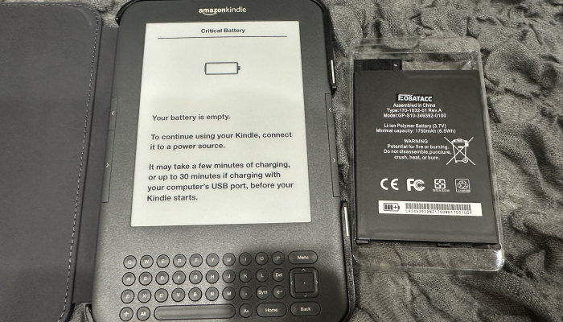
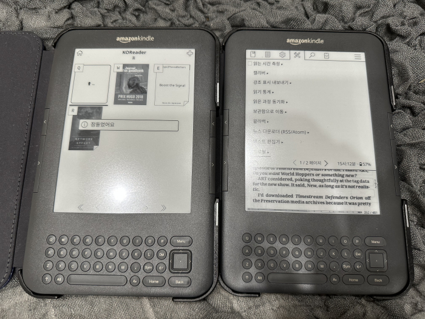

  킨들 3. 킨들 키보드. 라고 불리는 모델임. 이거 예전에 재미로 한번 샀었다가 팔았던기억이있는데, 킨들4와 조명이 달린 케이스같이, 예전엔 별생각 없이 팔았는데 지금 생각하면 아까운, 그런 모델인거같다. 새로 나오는 킨들들은 빠르긴하지만, 예전에 나온 이런 특징적인 모델들만의 매력이 있는것 같음. 이런 녀석은 조명 레이어가 없는 대신에 화면이 꽤 밝고 선명함. 킨들4나 터치도 비슷하게 화면이 밝고 선명하다고 느꼈다. 그리고 이건 넘김 키가 달려서 눌러서 책보기가 편하고, 키보드가 달려있어서 재미있음? 운이 좋으면 꽤 저렴하게 구입하는게 가능. 이 모델부터는 와이파이도 가능하기때문에 탈옥해서 코리더를 설치하면 아주 쾌적하게 사용가능하다. 구할 수 있을때 하나더사둬야겠다 ㅋ 그러고보면 구형 8세대 오아시스를 사모은 이유도 가볍고 작은 본체, 버튼달림. 인데, 배터리가 빨리닳는 치명적인 단점은, 여러대를 운용한다, 아마존 OS를 이전 버전으로 다운그래이드하고, 코리더인 상태로 보관한다,로 하면 보관시에 배터리 닳는 속도가 느려지는 것 같음.